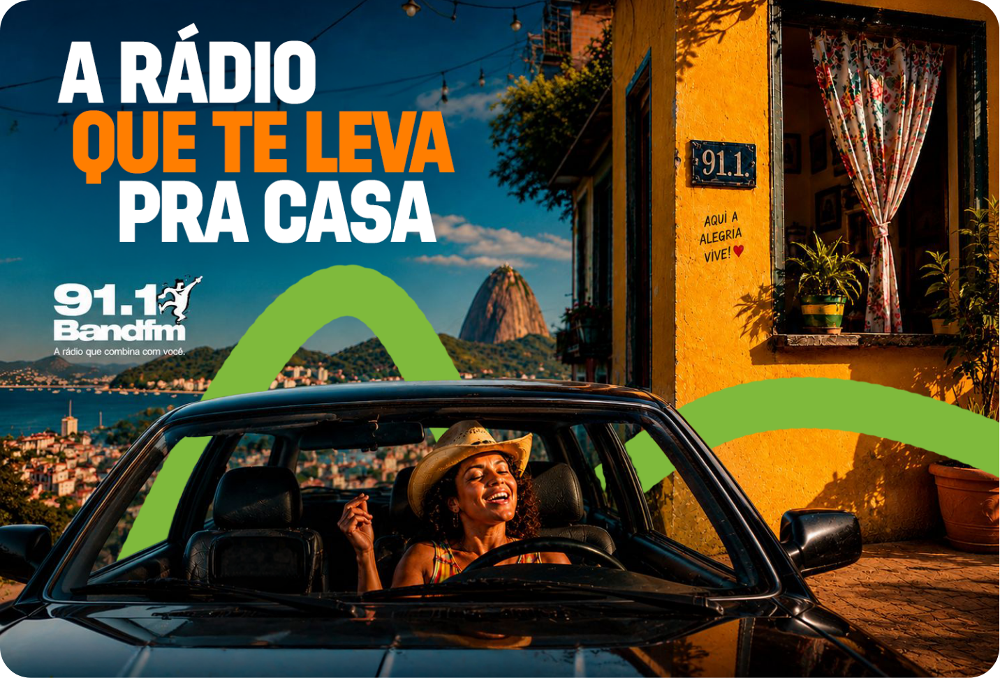
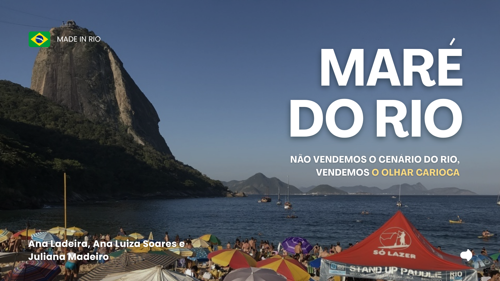
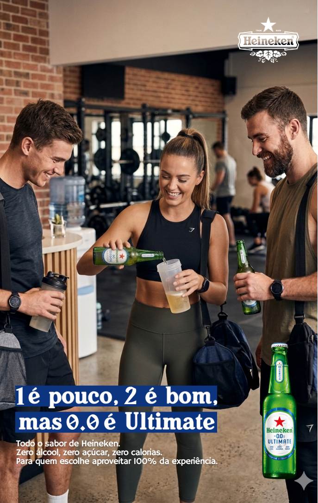
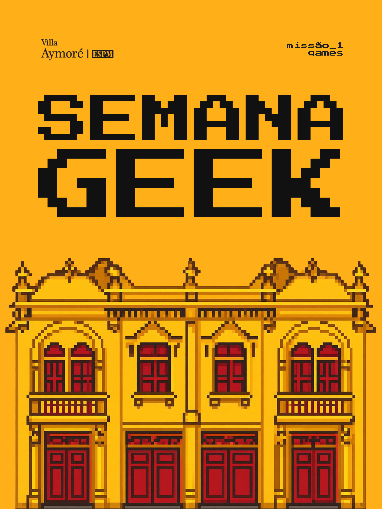

Portfólio · Comunicação e Publicidade · ESPM Rio
Estudante de Comunicação e Publicidade na ESPM Rio. Construo conexões reais entre pessoas, marcas e histórias — com intenção estratégica e olhar estético.
Ver projetos ▸Projetos acadêmicos
Projetos desenvolvidos na ESPM Rio com metodologia de mercado — pesquisa, estratégia, criação e apresentação para profissionais.

Estratégia de posicionamento e campanha integrada de 8 semanas para a Band FM 91.1 no mercado carioca.
★ 2º lugar — Projeto Integrado II · ESPM Rio
A Band FM chegou ao Rio em 2025 como gigante nacional, mas sua audiência real era predominantemente masculina e de classes A/B — o oposto do público-alvo histórico da marca: mulheres de classe C, 30–59 anos.

Produtora conceitual para exportar não a paisagem do Rio, mas o olhar carioca. Menção Honrosa nos 90 anos da WMcCann.
★ Menção Honrosa · pitch para profissionais da WMcCann
Criar solução escalável para o Rio se posicionar como potência exportadora em segmentos criativos — ideias, produtos e serviços.
"Não vendemos o cenário do Rio. Vendemos o olhar carioca." Dois pilares: produção de conteúdo original com identidade carioca + Escola Carioca de Criação.
Nos 3 minutos finais antes da entrega, decidimos confiar na intuição e voltar à ideia original — descartando uma sugestão que quebrava a lógica do conceito. Foi decisivo para a Menção Honrosa.

Dois projetos em períodos consecutivos: Heineken 0.0 (testimonial e ultimate) em Publicidade e Propaganda, e redação avançada em CP3A.
★ Dois períodos · evolução de linguagem publicitária
Desenvolvimento de duas peças publicitárias para Heineken 0.0: formato testimonial (depoimento real como âncora da mensagem) e ultimate (peça de impacto visual e copy direto). Foco em construir argumento sem alienar quem consome álcool.
Aprofundamento em técnica de redação publicitária com a Heineken como objeto de estudo. Construção de narrativa de marca com consistência de tom, voz e propósito ao longo de diferentes formatos.

Evento cultural de 2 dias idealizado e executado como Coordenadora de Marketing do Núcleo Villa Aymoré — com as primeiras parcerias externas da história do núcleo.
★ Monster Energy + Luderia Carioca · +20 participantes
Maio de 2025, período de provas finais. O Núcleo precisava de uma ação de maior visibilidade — algo que gerasse pertencimento sem orçamento próprio.
Trajetória
Uma linha do tempo de experiências, conquistas e participações que constroem minha trajetória em comunicação e cultura criativa.
Palestrante no Palco Arts&Crafts com a apresentação "Joga na Roda: Download Arts&Crafts 2026" — síntese ao vivo, em dupla com Sunamita Machado, das melhores ideias e conteúdos de dois dias de festival, com participação aberta da plateia.
Palco Arts&Crafts · 31/mai · 16h30Campanha integrada de 8 semanas para a Band FM Rio, desenvolvida com briefing, pesquisa, estratégia e criação na ESPM Rio.
Projeto Integrado II · ESPM RioStaff e entrevistadora na Casa 2 do maior festival de publicidade do Rio. Entrevistou profissionais de Artplan, The Pride Content, Kwai, ABOTTS, AB Pesquisas e Optimiza — cobertura de múltiplas frentes do mercado publicitário em um único evento.
ESPM Rio · 28/mar/2026Reconhecimento como Estudante Destaque da ESPM Rio pelo desempenho acadêmico no 1º semestre de 2025.
Estudante Destaque · ESPM RioConvidada pelo Prof. Wagner Venturini para falar com os calouros sobre trajetória e primeiros semestres na ESPM Rio. Uma das primeiras oportunidades de oratória em ambiente institucional.
Convite institucional · Jan/2026Cria do Rio, solução desenvolvida no Hackathon WMcCann × ESPM e apresentada em pitch para profissionais da agência.
Hackathon WMcCann × ESPMConvidada duas vezes para o podcast oficial da ESPM Rio. Tema: "Expectativa x realidade: como é a vida na faculdade" — conversa sobre a transição para o ensino superior e os primeiros semestres de Comunicação e Publicidade.
2 episódios · ESPM RioPrimeira entrevista com profissional do mercado, realizada em disciplina do 1º período. Conversa de mais de 30 minutos com a profissional da WMcCann — registrada em vídeo completo.
1º período · ESPM RioIdealização e coordenação de evento cultural de dois dias no Núcleo Villa Aymoré, com as primeiras parcerias externas do núcleo.
Monster Energy + Luderia CariocaFotografia
Três momentos: fotografia experimental no Lab de Imagem, fotografia publicitária aplicada e ensaios autorais de reposicionamento de marca pessoal.

Desenvolvimento de processos fotográficos para produtos, do aprofundamento técnico à construção de conceito visual.

Segunda entrega — aprofundamento técnico e desenvolvimento de conceito visual.

Transição da fotografia experimental para a linguagem aplicada ao mercado publicitário.
Direção estética e produção de ensaios fotográficos para empreendedoras que precisavam alinhar imagem ao posicionamento desejado. Identidade visual como extensão da narrativa.
Criação de conteúdo
Criação, captação e edição de vídeos para marca pessoal e clientes. Do planejamento editorial à câmera.
Planejamento, roteiro, captação e edição de vídeos para o perfil pessoal. Conteúdo que une posicionamento profissional em comunicação com identidade autoral — sem perder a voz.
Ver perfil no Instagram ↗Captação e edição de vídeos para marcas e profissionais. Do briefing à entrega — roteiro, gravação, edição e adaptação para diferentes formatos e plataformas.
Estratégia de conteúdo e direção visual para empreendedoras que precisavam encontrar ou fortalecer a própria voz nas redes. Do diagnóstico ao conteúdo publicado.
Design gráfico
Projeto de Design Gráfico na ESPM Rio — da reprodução de campanhas reais à criação autoral com as mesmas ferramentas.
A base das aulas foi estudar e reproduzir as campanhas reais da Rede Hortifruti no Photoshop e Illustrator. Reprodução como método de aprendizado — entender as escolhas de quem já sabe antes de criar as próprias.
Quando chegou a etapa de criar 4 campanhas próprias, parecia que a criatividade não ia fluir. No final, com o prof. Léo, não é que funcionou? As campanhas ainda precisam do nosso olhar e do nosso toque — a ferramenta sozinha não substitui isso.
Sobre mim
Nasci e cresci na Baixada Fluminense. Construí minha trajetória conciliando comunicação, marketing e produção de conteúdo — sempre com foco em criar conexões reais entre pessoas, marcas e histórias.
Atuo como Coordenadora de Marketing no Núcleo Villa Aymoré da ESPM Rio, com foco em e-mail marketing, comunicação institucional e HubSpot. Tenho especial interesse em planejamento estratégico e redação publicitária.
Acredito que estratégia e narrativa não são campos separados. A melhor comunicação é aquela que sabe exatamente o que quer dizer — e encontra a forma mais honesta de dizer.
Contato
Social media
Alcance que
vira comunidade.
Gestão estratégica do Instagram @marcioramosir para o Dr. Márcio Ramos — cirurgião-dentista com 40 anos de carreira e criador da Odontologia do Desejo.
O perfil tinha base expressiva, mas engajamento real baixo e conversão limitada. A estratégia foi simples: antes de mais impulsionamento, nutrir quem já estava lá.
Humanização antes de venda
Série de vídeos contando a trajetória do Dr. Márcio — de onde veio, como surgiu a Odontologia do Desejo. Identificação antes de argumento comercial.
Autoridade com propósito
Conteúdos educativos sobre NDLs posicionando o Dr. Márcio como referência de mercado — sem apelo direto à venda, construindo percepção de expertise.
Consistência editorial
12 posts em 22 dias úteis em março. Presença contínua no feed sinalizando atividade regular para o algoritmo — e para a audiência.